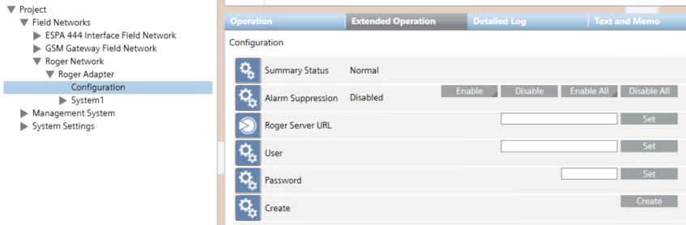

Connect and Configure the Roger RACS5 System for the First Time

The use of HTTPS is mandatory to ensure a secure communication over the network. You may use the unprotected HTTP protocol only if the Roger RACS5 server is installed locally on the same machine as the adapter.
- Select Project > Field Networks > [SORIS network] > [Roger RACS5 Adapter] > [Roger RACS5 Configuration].
- In the Operation tab, fill out the following connection parameters:
- URL (use a HTTPS IP address, except if local http://127.0.0.1 or http://localhost)
- User
- Password
For each field, enter the value and click Set. - In Create, click Create.
- The configuration data is acquired and the Roger RACS5 system objects populate the System Browser tree, under the Roger RACS5 adapter.
NOTE 1: To connect to an additional Roger RACS5 system and add it to the Desigo CC configuration, repeat the procedure above, and enter the connection parameters of the additional system.
Do not use the Configuration node again to change the connection parameters of a system (see Modifying the Roger RACS5 Connection Parameters).
NOTE 2: When the configuration data is acquired, an encrypted file is stored locally and then updated to always save the current configuration for the adapter to use upon restarting. Subsequent configuration changes are handled as described in Updating Roger RACS5 Configuration.
